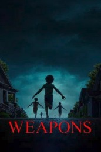
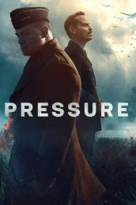
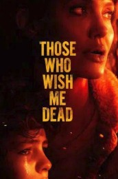
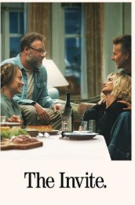
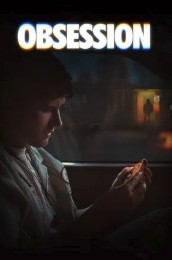
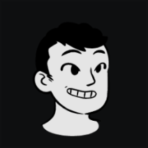

Popular· VIPTV SourcesFilters8

 Project Hail Mary2026 · 2h 36m · ★ 8.4PG-13VVIPTV
Project Hail Mary2026 · 2h 36m · ★ 8.4PG-13VVIPTV
ThrillerCrime2020s7+“heist”Hide watched500+ votesAfter 1 Jan 2021





Project Hail Mary2026 · 2h 36m · ★ 8.4PG-13VVIPTV